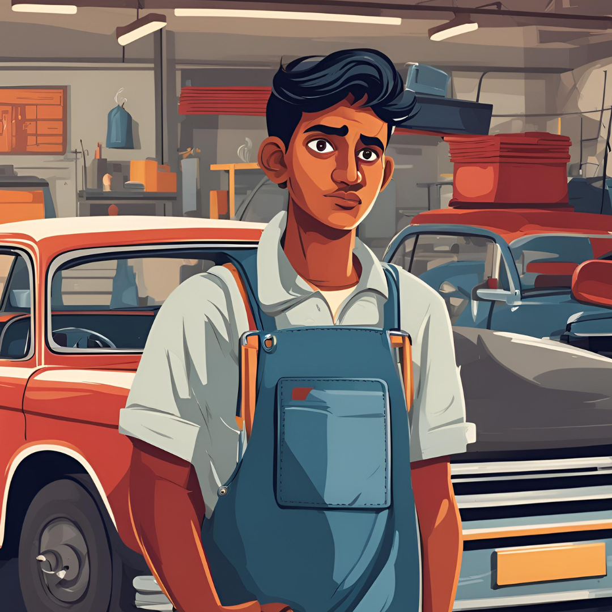

Nosso aventureiro está terminando o terceiro colegial e precisa decidir se vai fazer uma faculdade ou se vai começar a trabalhar em uma oficina de carros de um amigo para levantar uma graninha.

Na faculdade, ele conheceu muitas pessoas com diversas habilidades diferentes, além de todas as oportunidades de aprendizado e trabalho oferecidades pela Universidade. Isso lhe abriu a mente. Um dia, lhe foi oferecido a oportunidade de fazer um curso no exterior.
Durante o tempo de trabalho na oficina, nosso aventureiro pode aprender diversas técnicas automotivas, e com o passar do tempo alimentou um relacionamento sério com uma namorada, mas ainda pensava na faculdade.